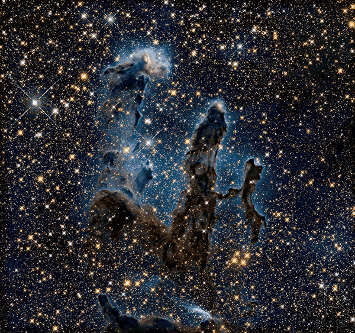
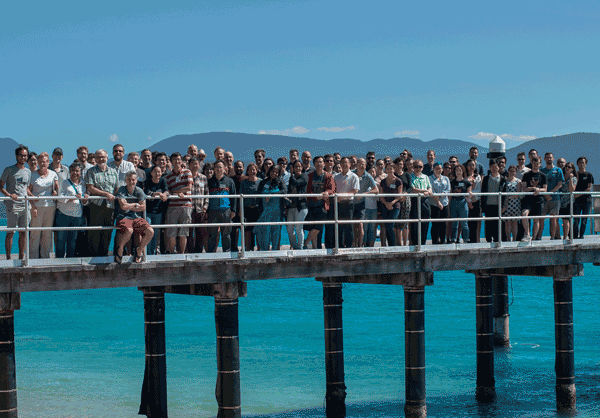

在一个小小星球上的人类，用尽各种方法和手段、凭借最聪慧的头脑来把目光望向宇宙，想要看得更深、更远，了解宇宙存在和演化的秘密，反过来再思考自己为什么存在、人类的命运在自然法则的指引下该去向何方。这是一份独特的浪漫，也是值得投入一生的事业。

我的天文情怀大约始于20岁时写的小诗：
弹指一挥间，
匆匆二十年，
二十年前呱呱坠地，
二十年后已将不惑，
四十六亿年沧桑，
四千亿盏明灭，
在银河的悬臂里，
我们始终不过一粒埃尘，
逆溯来自亘古的光，
透过岁月年轮，
那观测以外的视界，
恰是生命原初的秘密，
怀着一颗年轻的心，
和不再年轻的生命，
踏上，
这漫漫旅程。
研究 (Research)
- Zhao, X., Mao, Y., Cheng, C., & Wandelt, B. D. 2022. Simulation-Based Inference of Reionization Parameters From 3D Tomographic 21 cm Lightcone Images. ApJ.
- Zhao, X., Mao, Y., & Wandelt, B. D. 2022. Implicit Likelihood Inference of Reionization Parameters from the 21 cm Power Spectrum. arXiv e-prints.
- Simulation-Based Inference of Reionization Parameters (private for now). in prep.
荣誉(Honor)
- 清华-AMD空间科学技术奖学金（一等）（清华大学天文系）
- 国家奖学金（武汉大学物理科学与技术学院物理学基地班）
参与会议 (Conferences)
国际会议 (International Conferences)
- ‘Barefoot Reionization’: Exploring the First billion Years of the Universe. 14th - 19th, 2019. Fitzroy Island, QLD, Australia.

- Quarks to Cosmos with AI (Virtual Conference), 2021. Carnegie Mellon University, USA.
主持会议 (Conferences I host)
邀请报告/海报 (Invited talks and Posters)
- HERA 10-Minute Talk. June 24, 2021. UC Berkeley. (Telecon)
课程 (Classes)
天文课 (Astronomy)
- 物理宇宙学 (Physical Cosmology)
- 天文技术与方法 (Astrophysical technology and methods)
- 高等实测天体物理 (Advanced measurement astronomy)
- 高能天体物理（High energy astrophysics）
- 星系动力学 (Galaxy dynamics)
- 恒星物理 (Stellar physics)
物理课 (Physics)
- 量子力学
- 广义相对论
- 电动力学
- 原子物理
- 光学
- 电磁学
- 经典力学
- 理论力学
- 固体物理
- 激光物理
- 热学
- 新能源材料
- 核物理学
- 粒子物理
数学课 (Math)
- 微积分I,II
- 概率论与数理统计
- 线性代数
- 常微分方程
- 近代数学
- 数学物理方法